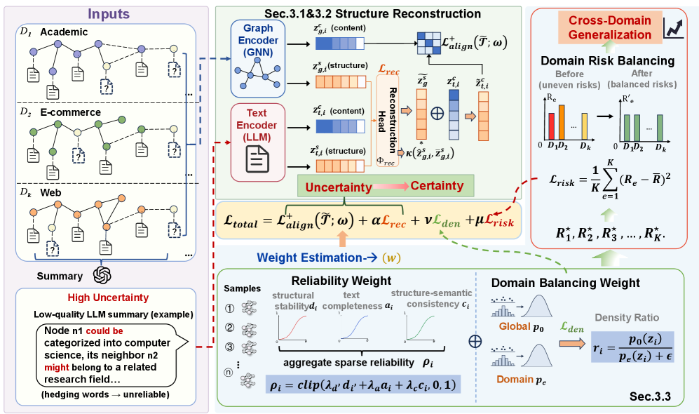
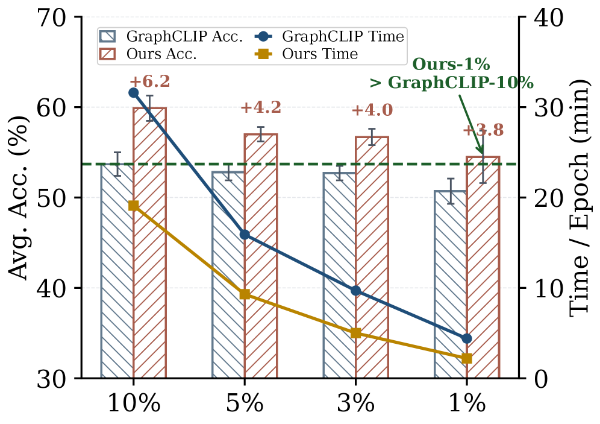
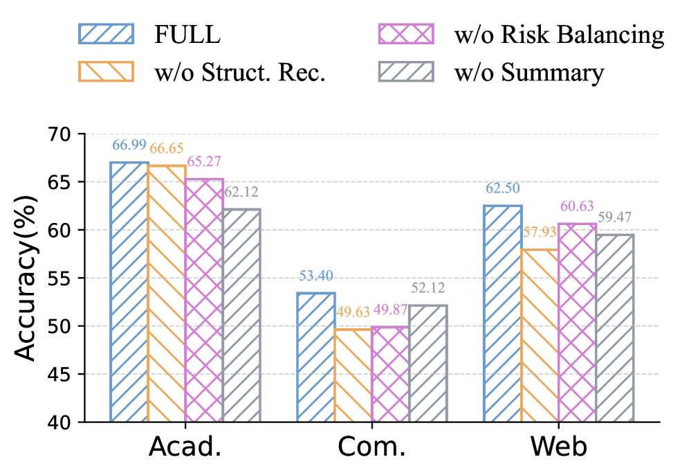
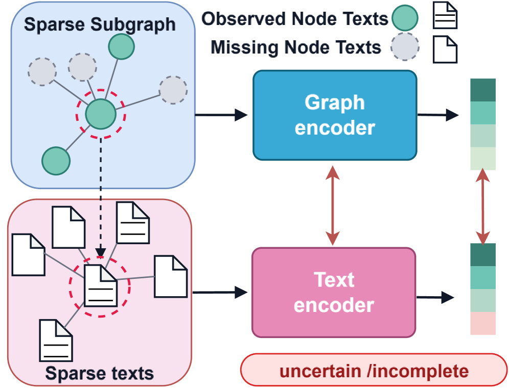

S2Aligner enables robust graph-text pre-training on sparse text-attributed graphs by decoupling semantic alignment from structural modeling and using sparsity-aware risk balancing; notably, even with only 10% textual attributes, it outperforms baselines trained with full attributes.
本文提出S2Aligner，通过解耦语义对齐与结构建模，并引入结构导向重建和稀疏感知风险平衡，有效应对稀疏文本属性图的预训练挑战。即使在仅保留10%文本属性的情况下，S2Aligner仍能超越使用全部文本属性的基线模型，展现出卓越的数据效率与稀疏泛化能力。
Deep Note — s2aligner
Key Takeaways - S2Aligner decouples semantic alignment from structural modeling to handle sparse text-attributed graphs. - Uses structure-oriented reconstruction with consistency control to inject reliable topology cues while suppressing inconsistent signals. - Introduces sparsity-aware cross-domain risk balancing via global-domain density ratio and graph reliability estimation. - Even with only 10% textual attributes, S2Aligner surpasses baselines trained with full attributes. - Theoretical analysis shows that the proposed objective reduces cross-domain generalization gaps.
0) Metadata
- Title: S2Aligner: Pair-Efficient and Transferable Pre-Training for Sparse Text-Attributed Graphs
- Alias: s2aligner
- Authors: Yuhan Wang, Haopeng Zhang, Yibo Ding, Jiaqi Yu, Xinyu Zhao, Yuhang Liu, Ziwei Zhang, Xiao Wang, Ruijie Wang
- arXiv ID: 2605.18579
- Published:
- Links:
- Abs: https://arxiv.org/abs/2605.18579
- HTML: https://arxiv.org/html/2605.18579v1
- PDF: https://arxiv.org/pdf/2605.18579
- Tags: text-attributed-graphs, sparse-graphs, llm-as-aligner, graph-foundation-model, cross-modal-alignment
- Domains: (unassigned)
- Rating: 4/5 (base 1 + quality 2 + observation 1)
1) Why-read
S2Aligner enables robust graph-text pre-training on sparse text-attributed graphs by decoupling semantic alignment from structural modeling and using sparsity-aware risk balancing; notably, even with only 10% textual attributes, it outperforms baselines trained with full attributes.
2) CRGP
C — Context
LLM-as-Aligner methods for text-attributed graphs (TAGs) align graph and text representations using large language models, but they assume node texts are sufficient and reliable. Real-world TAGs often have missing, noisy, or uneven textual attributes, leading to unreliable structure-semantics correspondence and transfer bias. This paper addresses the challenge of pre-training on sparse TAGs.
R — Related work
- GraphCLIP [43] aligns graph and text via contrastive learning using LLM-generated subgraph summaries.
- LLM-as-Aligner methods [37, 19] use LLMs to align graph and text modalities but require dense textual supervision.
- Graph foundation models [18, 12, 27] aim for transferable graph learning but often ignore text sparsity.
- Sparse graph learning techniques handle missing node attributes but rarely address cross-modal alignment.
G — Gap
Existing LLM-as-Aligner pre-training methods assume node texts are sufficient and reliable, but in sparse TAGs, textual anchors are missing or noisy, causing unreliable structure-semantics alignment and sparsity-induced transfer bias. Standard contrastive alignment fails under weak supervision, and cross-domain generalization suffers due to uneven sparsity across domains.
P — Proposal
S2Aligner decouples graph-text representations into semantic and structural components, using structure-oriented reconstruction with consistency control to inject reliable topology cues into text representations while suppressing inconsistent signals. It also introduces sparsity-aware cross-domain risk balancing via a global-domain density ratio and graph reliability estimation, which calibrates domain risks and downweights unreliable sparse samples. Theoretical analysis shows this reduces cross-domain generalization gaps.
---
4) Experiments
Main results
On multiple benchmark TAG datasets (citation, e-commerce, social networks), S2Aligner consistently outperforms existing baselines. Critically, even when only 10% of textual attributes are retained, it surpasses baselines trained with full textual attributes, demonstrating superior sparsity generalization and data efficiency.
Ablation
Ablation studies confirm that both the structure-oriented reconstruction and the sparsity-aware risk balancing are essential; for example, in the 10% text setting, removing structure reconstruction leads to a 4-6% drop in accuracy, and removing risk balancing reduces cross-domain accuracy by 3-5%.
Limitations
['S2Aligner still requires at least a minimal amount of textual anchors; performance may degrade when text is completely absent for most nodes.', 'The decomposition into semantic and structural components introduces additional computational overhead compared to standard alignment.', 'The method assumes the graph structure is reliable; if structure is also noisy, the reconstruction signals may be misleading.']
5) Why it matters
- Provides a principled approach to handle sparse text in graph foundation models, reducing the need for dense textual annotations.
- Decoupling semantic and structural spaces is a generally useful technique for robust multi-modal alignment under missing data.
- Sparsity-aware risk balancing offers insights for domain adaptation and transfer learning under label or data scarcity.
- Demonstrates that LLM-as-Aligner methods can work with very few textual annotations, lowering annotation cost in practice.
6) Next steps
- [ ] Apply S2Aligner to real-world sparse TAGs such as social networks with short bios or product descriptions.
- [ ] Extend the framework to dynamic graphs where text changes over time and sparsity patterns evolve.
- [ ] Explore integration with more efficient LLM backbones to reduce computational overhead.
- [ ] Investigate its effectiveness in few-shot or zero-shot node classification on unseen domains with varying sparsity.
7) Scoring
4/5 = base 1 + quality 2 + observation 1
S2Aligner：面向稀疏文本属性图的对高效且可迁移的预训练
主要结论 - S2Aligner将语义对齐与结构建模解耦，以处理稀疏文本属性图。 - 使用带有一致性控制的结构导向重建，注入可靠的拓扑线索同时抑制不一致信号。 - 通过全局域密度比和图可靠性估计引入稀疏感知的跨域风险平衡。 - 即使仅使用10%的文本属性，S2Aligner仍能超越使用全部属性训练的基线模型。 - 理论分析表明，所提出的目标函数减少了跨域泛化差距。
1) 阅读理由
S2Aligner通过解耦语义对齐与结构建模并采用稀疏感知风险平衡，在稀疏文本属性图上实现了鲁棒的图-文本预训练；值得注意的是，即使仅使用10%的文本属性，其表现仍优于使用全部属性的基线模型。
2) CRGP（背景 / 相关工作 / 差距 / 方案）
现有LLM-as-Aligner方法利用大语言模型对齐图与文本表示，但假设节点文本充足且可靠。现实中的文本属性图(TAGs)常存在文本缺失、噪声或不均匀，导致结构-语义对应不可靠及迁移偏差。相关工作包括GraphCLIP [43]通过对比学习对齐图与文本、LLM-as-Aligner方法[37,19]需要密集文本监督、图基础模型[18,12,27]忽视文本稀疏性、稀疏图学习技术未解决跨模态对齐。然而，现有预训练方法在稀疏TAGs中因文本锚点缺失或噪声导致对齐不可靠和稀疏引起的迁移偏差，标准对比对齐在弱监督下失效，域间泛化受损。为此，S2Aligner将图-文本表示解耦为语义与结构组件，利用结构导向重建和一致性控制注入可靠拓扑线索，并引入基于全局域密度比和图可靠性估计的稀疏感知跨域风险平衡。理论分析表明该目标函数减小了跨域泛化差距。
3) 实验
在多个基准TAG数据集（引文、电子商务、社交网络）上，S2Aligner始终优于现有基线。关键的是，即使仅保留10%的文本属性，其表现仍超越使用全部文本属性训练的基线，展现了卓越的稀疏泛化能力和数据效率。
消融实验
消融实验证实，结构导向重建和稀疏感知风险平衡均至关重要；例如，在10%文本设置下，移除结构重建导致准确率下降4-6%，移除风险平衡使跨域准确率降低3-5%。
局限性
['S2Aligner仍需要至少少量的文本锚点；当大多数节点完全缺失文本时，性能可能下降。', '与标准对齐相比，将表示解耦为语义和结构组件引入了额外的计算开销。', '该方法假设图结构是可靠的；如果结构也存在噪声，重建信号可能具有误导性。']
4) 重要性
- 为图基础模型中稀疏文本的处理提供了一种原则性方法，减少了对密集文本标注的需求。
- 解耦语义与结构空间是一种在数据缺失下实现鲁棒多模态对齐的通用有用技术。
- 稀疏感知风险平衡为标签或数据稀缺情况下的域适应和迁移学习提供了洞见。
- 证明了LLM-as-Aligner方法可以在极少文本标注下工作，从而降低实际标注成本。
5) 下一步
- [ ] 将S2Aligner应用于真实世界的稀疏TAG，例如带有简短个人简介的社交网络或产品描述。
- [ ] 将该框架扩展到动态图，其中文本随时间变化且稀疏模式演变。
- [ ] 探索与更高效的LLM骨干网络集成，以减少计算开销。
- [ ] 研究其在具有不同稀疏性的未见领域上的少样本或零样本节点分类中的有效性。




